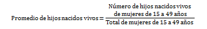
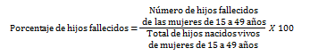

Es el resultado de dividir el número de hijos nacidos vivos de las mujeres de 15 a 49 años, entre el total de mujeres en este rango de edad.
Es el número de hijos fallecidos de las mujeres de 15 a 49 años respecto al total de hijos nacidos vivos de las mujeres de este mismo rango de edad, expresado por cada cien.
Fuente:INEGI. Encuesta Intercensal 2015.
Nota:Los indicadores presentados son estimadores obtenidos a partir de la Encuesta Intercensal 2015.